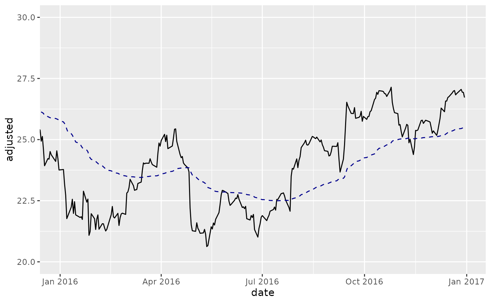
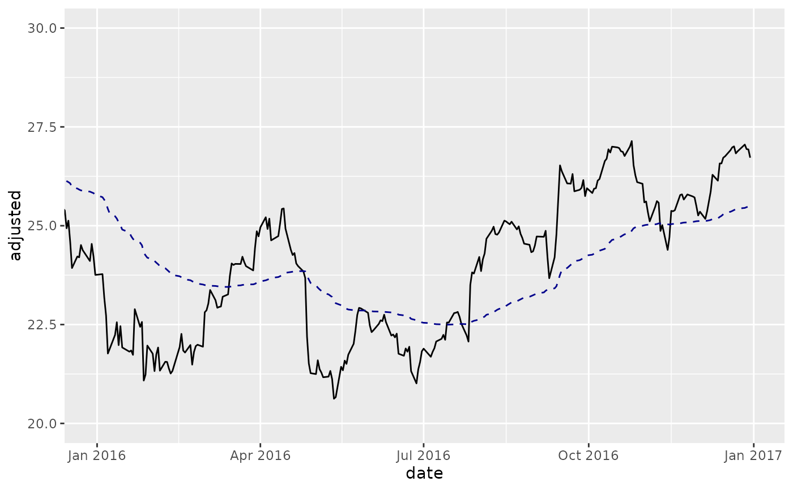

The underlying moving average functions used are specified in TTR::SMA()
from the TTR package. Use coord_x_date() to zoom into specific plot regions.
The following moving averages are available:
Simple moving averages (SMA): Rolling mean over a period defined by
n.Exponential moving averages (EMA): Includes exponentially-weighted mean that gives more weight to recent observations. Uses
wilderandratioargs.Weighted moving averages (WMA): Uses a set of weights,
wts, to weight observations in the moving average.Double exponential moving averages (DEMA): Uses
vvolume factor,wilderandratioargs.Zero-lag exponential moving averages (ZLEMA): Uses
wilderandratioargs.Volume-weighted moving averages (VWMA): Requires
volumeaesthetic.Elastic, volume-weighted moving averages (EVWMA): Requires
volumeaesthetic.
Usage
geom_ma(
mapping = NULL,
data = NULL,
position = "identity",
na.rm = TRUE,
show.legend = NA,
inherit.aes = TRUE,
ma_fun = SMA,
n = 20,
wilder = FALSE,
ratio = NULL,
v = 1,
wts = 1:n,
...
)
geom_ma_(
mapping = NULL,
data = NULL,
position = "identity",
na.rm = TRUE,
show.legend = NA,
inherit.aes = TRUE,
ma_fun = "SMA",
n = 20,
wilder = FALSE,
ratio = NULL,
v = 1,
wts = 1:n,
...
)Arguments
- mapping
Set of aesthetic mappings created by
ggplot2::aes()orggplot2::aes_(). If specified andinherit.aes = TRUE(the default), it is combined with the default mapping at the top level of the plot. You must supplymappingif there is no plot mapping.- data
The data to be displayed in this layer. There are three options:
If
NULL, the default, the data is inherited from the plot data as specified in the call toggplot2::ggplot().A
data.frame, or other object, will override the plot data. All objects will be fortified to produce a data frame. Seeggplot2::fortify()for which variables will be created.A
functionwill be called with a single argument, the plot data. The return value must be adata.frame., and will be used as the layer data.- position
A position adjustment to use on the data for this layer. This can be used in various ways, including to prevent overplotting and improving the display. The
positionargument accepts the following:The result of calling a position function, such as
position_jitter(). This method allows for passing extra arguments to the position.A string naming the position adjustment. To give the position as a string, strip the function name of the
position_prefix. For example, to useposition_jitter(), give the position as"jitter".For more information and other ways to specify the position, see the layer position documentation.
- na.rm
If
TRUE, silently removesNAvalues, which typically desired for moving averages.- show.legend
logical. Should this layer be included in the legends?
NA, the default, includes if any aesthetics are mapped.FALSEnever includes, andTRUEalways includes. It can also be a named logical vector to finely select the aesthetics to display.- inherit.aes
If
FALSE, overrides the default aesthetics, rather than combining with them. This is most useful for helper functions that define both data and aesthetics and shouldn't inherit behavior from the default plot specification, e.g.ggplot2::borders().- ma_fun
The function used to calculate the moving average. Seven options are available including: SMA, EMA, WMA, DEMA, ZLEMA, VWMA, and EVWMA. The default is
SMA. SeeTTR::SMA()for underlying functions.- n
Number of periods to average over. Must be between 1 and
nrow(x), inclusive.- wilder
logical; if
TRUE, a Welles Wilder type EMA will be calculated; see notes.- ratio
A smoothing/decay ratio.
ratiooverrideswilderinEMA.- v
The 'volume factor' (a number in [0,1]). See Notes.
- wts
Vector of weights. Length of
wtsvector must equal the length ofx, orn(the default).- ...
Other arguments passed on to
ggplot2::layer(). These are often aesthetics, used to set an aesthetic to a fixed value, likecolor = "red"orsize = 3. They may also be parameters to the paired geom/stat.
Aesthetics
The following aesthetics are understood (required are in bold):
xyvolume, Required for VWMA and EVWMAalphacolourgrouplinetypelinewidthsize
See also
See individual modeling functions for underlying parameters:
TTR::SMA()for simple moving averagesTTR::EMA()for exponential moving averagesTTR::WMA()for weighted moving averagesTTR::DEMA()for double exponential moving averagesTTR::ZLEMA()for zero-lag exponential moving averagesTTR::VWMA()for volume-weighted moving averagesTTR::EVWMA()for elastic, volume-weighted moving averagescoord_x_date()for zooming into specific regions of a plot
Examples
library(dplyr)
library(ggplot2)
AAPL <- tq_get("AAPL", from = "2013-01-01", to = "2016-12-31")
# SMA
AAPL %>%
ggplot(aes(x = date, y = adjusted)) +
geom_line() + # Plot stock price
geom_ma(ma_fun = SMA, n = 50) + # Plot 50-day SMA
geom_ma(ma_fun = SMA, n = 200, color = "red") + # Plot 200-day SMA
coord_x_date(xlim = c("2016-01-01", "2016-12-31"),
ylim = c(20, 30)) # Zoom in
 # EVWMA
AAPL %>%
ggplot(aes(x = date, y = adjusted)) +
geom_line() + # Plot stock price
geom_ma(aes(volume = volume), ma_fun = EVWMA, n = 50) + # Plot 50-day EVWMA
coord_x_date(xlim = c("2016-01-01", "2016-12-31"),
ylim = c(20, 30)) # Zoom in

# EVWMA
AAPL %>%
ggplot(aes(x = date, y = adjusted)) +
geom_line() + # Plot stock price
geom_ma(aes(volume = volume), ma_fun = EVWMA, n = 50) + # Plot 50-day EVWMA
coord_x_date(xlim = c("2016-01-01", "2016-12-31"),
ylim = c(20, 30)) # Zoom in
